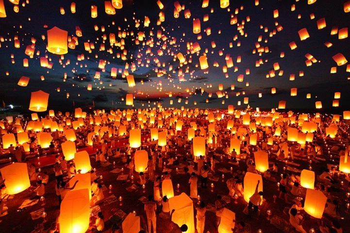
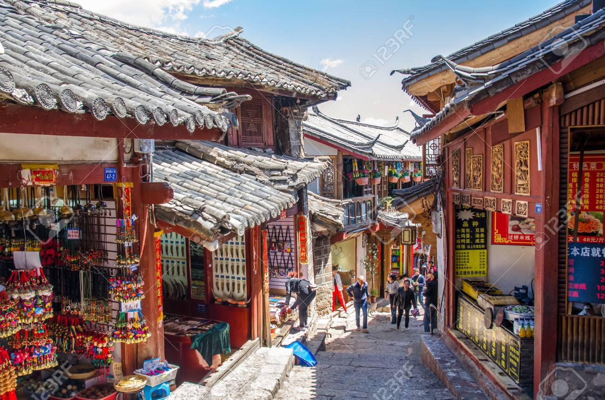
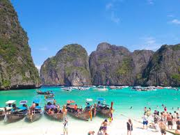
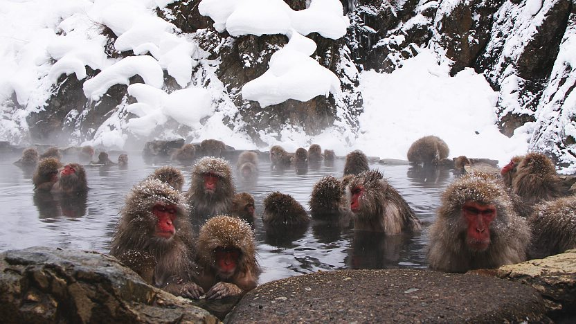
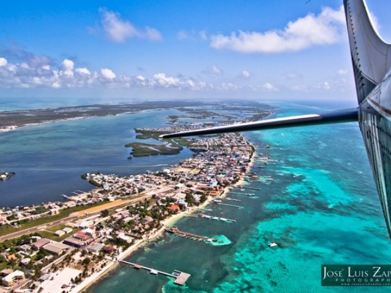

Here is a list of the countries I've visited:
However, out of all the places I've visited, I've narrowed them down to my top five favorites.
Taiwan has to be first on my list. Why? Because I lived there for three years.
Before I worked in tech, I taught English as a second language to preschool, elementary, and middle school kids in New Taipei, Taiwan. It was a scary and new experience for me, but I learned a lot and I really enjoyed the chance to become completely absorbed in a culture so different from ours.
Whenever I had time off from work, I would visit different parts of the country, including the Pingxi lantern town, Wulai hot spring town, and Green Island.

I studied abroad in Shanghai, China after my sophomore year of college, and in my opinion, it is one of the world's most under-rated travel destinations.
China is full of rich and ancient history and is home to some of the most beautiful, complex languages on the planet. I studied Mandarin Chinese when I was in China and Taiwan.
After I studied in Shanghai and Beijing, I returned to China several years later on vacation to visit Yunnan Province (Lijiang and Dali) as well as the breathtakingly beautiful cities of Yangzhou and Guilin. Below is a photo of Lijiang, a famous historical city in Yunnan.

I love Thailand so much that I've visited it three times. The first two times, I visited Bangkok and the southern islands, and the third time, I explored northern Thailand.
My favorite place to visit is the Koh Phi Phi islands in the Andaman Sea. This beautiful collection of islands has something for everyone: scuba diving, snorkelling, great food, nightlife, and beautiful beaches.
Unfortunately, you aren't able to visit some parts of the islands anymore because all the tourism has done some damage to the local environment, so there is now a massive restoration effort going on.

It shouldn't come as a surprise that Japan is on my list. Japan is famous for its delicious food, beautiful historical buildings, polite and kind people, pristine public transportation, and high-tech culture.
I've visited Tokyo, Kyoto, Osaka, and Nara. But my favorite place I've been in Japan is the Jigokudani Monkey Park in Nagano Prefecture. This area is famous for its 'snow monkeys' that lounge around naturally in the hot springs surrounding the area. They're really cute and fascinating to observe.
While in Jigokudani, I stayed in an onsen or traditional Japanese hot spring inn. It was a truly amazing experience.

Belize is a small country in Central America south of Mexico famous for its jungles and beautiful beaches, as well as some unique scuba diving opportunities. I loved visiting this country because the people are some of the friendliest I've ever encountered while traveling.
My favorite experience while in Belize was exploring the Achtun Tunichil Muknal (ATM) cave, which contains Mayan ruins including the bones of some human sacrifices! I also did some great scuba diving while on Amergris Caye.
